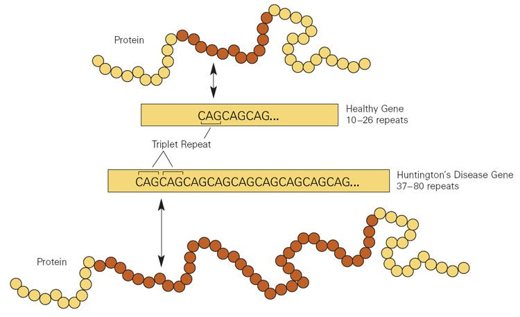

General information only. It does not replace advice from a health professional. For sudden neurological symptoms, call emergency services.


What it is
Huntington's disease is an inherited neurodegenerative disease that affects movement, thinking and behaviour. It is caused by a mutation in the HTT gene, which contains an abnormally long repeat of the CAG triplet: 40 or more repeats definitely cause the disease. The abnormal protein, mutant huntingtin, mainly damages the neurons of the striatum (the basal ganglia) and the cortex.
It affects about 5 to 10 people per 100,000 in Europe. Symptoms usually start between 30 and 50, although there are juvenile (before 20) and late-onset forms. It is named after the American physician George Huntington, who described it in 1872.
How it is inherited
Inheritance is autosomal dominant: each child of an affected person has a 50% chance of inheriting the mutation, whether a boy or a girl. Anyone who inherits it will develop the disease if they live long enough. The more CAG repeats, the earlier it usually starts. Repeats can increase from one generation to the next, especially through the father (anticipation).
Symptoms
Motor:
- Chorea: involuntary, rapid, irregular movements that seem to jump from one part of the body to another, as if the person were fidgeting or dancing. At first they may look like simple clumsiness or nervousness.
- Difficulty with coordination, balance and speech.
- In advanced stages: stiffness, slowness, difficulty swallowing and falls.
Cognitive: slowed thinking, difficulty planning, organising and switching tasks, which ends in dementia.
Psychiatric: often the first: depression, irritability, apathy, anxiety, obsessive behaviour and, in some cases, psychosis. The risk of suicide is increased and requires attention.
The disease progresses over 15 to 20 years.
Diagnosis and genetic testing
- The genetic test confirms the diagnosis in someone with symptoms.
- Predictive testing: healthy people with an affected parent can find out whether they carry the mutation. It is a very personal decision, with psychological, family and employment implications. It is done only in adults and after genetic counselling over several appointments, following international protocols. Many people at risk prefer not to know.
- Preimplantation and prenatal diagnosis for those who wish to have children without the mutation.
See genetic testing in neurology.
Treatment
No treatment slows the disease, but many symptoms can be relieved:
- Chorea: tetrabenazine or deutetrabenazine, which reduce dopamine; also some antipsychotics. Tetrabenazine can worsen depression.
- Depression and irritability: antidepressants and psychological support.
- Physiotherapy, speech and language therapy (speech and swallowing), occupational therapy and nutrition: many patients lose weight and need a high-calorie diet.
- Social support and support for the family, often with several generations affected.
Research
Huntington's disease is a model for gene and RNA therapies, which aim to reduce production of the abnormal huntingtin. In 2025, a gene therapy delivered by neurosurgery (AMT-130) showed for the first time a significant slowing of progression in a trial. See gene and RNA therapies.
Sources
- Bates GP, et al. Huntington disease. Nat Rev Dis Primers. 2015;1:15005.
- Tabrizi SJ, et al. Huntington disease: new insights into molecular pathogenesis and therapeutic opportunities. Nat Rev Neurol. 2020;16:529-46.
- MacLeod R, et al. Recommendations for the predictive genetic test in Huntington's disease. Clin Genet. 2013;83:221-31.
- Huntington's Disease Society of America. Overview.
- Spanish Huntington's Disease Association. The disease.